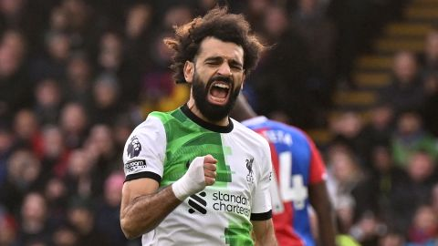

>> Mohamed Salah scores his 200th Liverpool goal

- Having failed to score in his team’s previous two games, Mohamed Salah had to wait longer than many had expected for his
milestone Liverpool goal.
- But on Saturday, with the Reds a goal down against Crystal Palace at Selhurst Park, the Egyptian found the net when it
mattered most to score his 200th Liverpool goal and 150th in the Premier League, sparking a comeback 2-1 victory for his
team.
- The 31-year-old is only the fifth player in the club’s history to score 200 goals or more, joining a selective group
which includes Ian Rush, Roger Hunt, Gordon Hodgson and Billy Liddell.
- “The most important thing is we’ve won the game,” Salah told TNT Sports after the 2-1 win. “When we win a game and I
score goals it’s a great feeling but, yeah, I’m happy with the record and happy for the team.”
- Liverpool had fallen behind to a Jean-Philippe Mateta penalty in the 57th minute, with the Video Assistant Referee (VAR)
deeming that Jarell Quansah had fouled Mateta when trying to clear the ball.
- It was the ninth time Liverpool had fallen behind in a match this season, but no team in the Premier League has secured
more than Liverpool’s 18 points from a losing position.
- Palace, a team struggling in the bottom-half of the league, was then reduced to 10-men when Jordan Ayew was sent off for
two bookable offenses.
- Liverpool quickly capitalized with Salah scoring just over a minute later, before substitute Harvey Elliott netted the
winner in added time with a brilliant strike from the edge of the box.
- The win moves Liverpool to the top of the table, though the Reds’ time on the summit might be temporary if Arsenal beats
Aston Villa in the final Premier League game of the day.
- Though Liverpool dominated possession, Jurgen Klopp’s side was far from convincing until Salah sparked the revival.
- Until Palace’s opener neither team had posed much of a threat in front of goal, which might explain why the television
cameras often panned to Hollywood star Hugh Jackman, watching the match from the stands, in the first half.
Source : Click
here